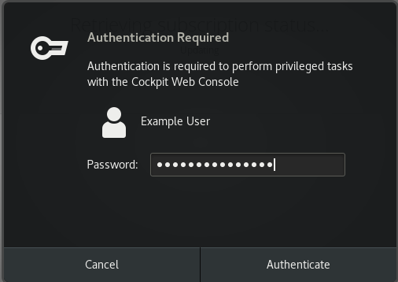
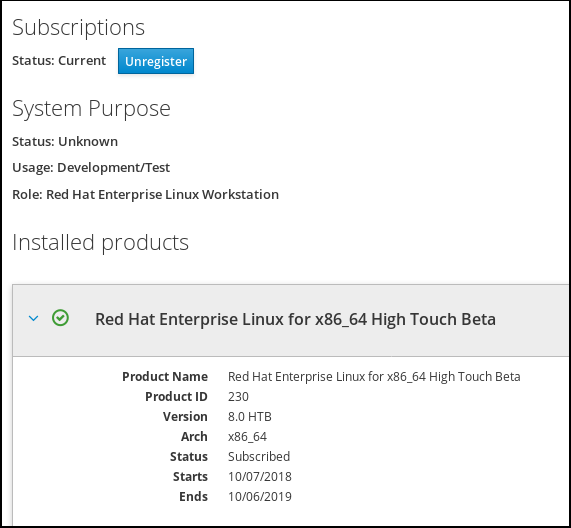
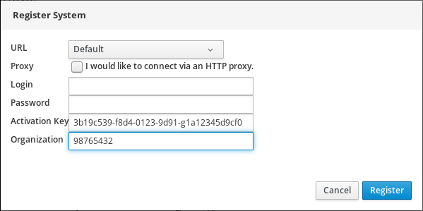

The RHEL 8 web console can help you to register and manage your subscription for Red Hat Enterprise Linux 8.
To get a subscription for your Red Hat Enterprise Linux, you need to have an account in the Red Hat Customer Portal or an activation key.
This chapter covers:
- Subscription management in the RHEL 8 web console.
- Registering subscriptions for your system in the web console with the Red Hat user name and password.
- Registering subscriptions with the activation key.
- Purchased subscriptions.
- The system subjected to subscription has to be connected to the Internet because the web console needs to communicate with the Red Hat Customer Portal.
The RHEL 8 web console provides an interface for using Red Hat Subscription Manager installed on your local system. The Subscription Manager connects to the Red Hat Customer Portal and verifies all available:
- Active subscriptions
- Expired subscriptions
- Renewed subscriptions
If you want to renew the subscription or get a different one in Red Hat Customer Portal, you do not have to update the Subscription Manager data manually. The Subscription Manager synchronizes data with Red Hat Customer Portal automatically.
The following describes subscribing the newly installed Red Hat Enterprise Linux using the RHEL 8 web console.
Prerequisites
Valid user account in the Red Hat Customer Portal.
See the Create a Red Hat Login page.
- Active subscription for the RHEL system.
Procedure
Type subscription in the search field and press the Enter key.

Alternatively, you can log in to the RHEL 8 web console. For details, see Logging in to the web console.
In the polkit authentication dialog for privileged tasks, add the password belonging user name displayed in the dialog.

- Click Authenticate.
In the Subscriptions dialog box, click Register.

Enter your Customer Portal credentials.

Enter the name of your organization.
You need to add the organization name or organization ID, if you have more than one account in the Red Hat Customer Portal. To get the org ID, go to your Red Hat contact point.
- Click the Register button.
At this point, your RHEL 8 system has been successfully registered.

To register a subscription for Red Hat Enterprise Linux,
Prerequisites
- If you do not have a user account in the portal, your vendor provides you with the activation key.
Procedure
Type subscription in the search field and press the Enter key.
Alternatively, you can log in to the RHEL 8 web console. For details, see Logging in to the web console.
In the authentication dialog, add the system username and password you created during the system installation.
- Click Authenticate.
In the Subscriptions dialog box, click Register.
- Enter the activation key in the registration form.
Enter the name of your organization.
You need to add the organization name or organization ID, if you have more than one account in the Red Hat Customer Portal.
To get the org ID, go to your Red Hat contact point.

- Click the Register button.
At this point, your RHEL 8 system has been successfully registered.